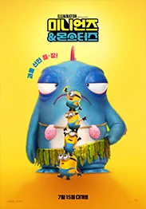
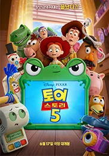
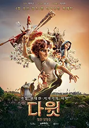
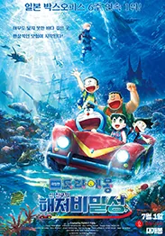
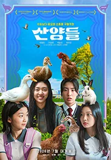
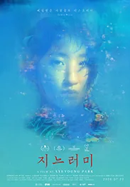
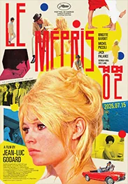
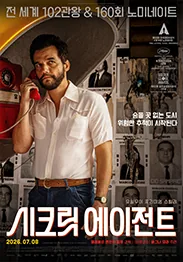
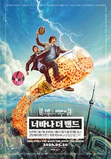

7월 5주차 극장가는 한국영화 <호프>가 지키고 있는 상위권 차트에 대형 외화 신작들이 대거 진입하며 미국영화가 압도적인 점유율을 나타낸 한 주였다. 강력한 팬덤을 보유한 할리우드 흥행작들이 톱5 중 네 자리를 채우며 여름 성수기 극장가의 주도권을 이끌었다.
1위는 개봉 첫 주 정상을 차지한 미국 액션 블록버스터 <스파이더맨: 브랜드 뉴 데이>다. <스파이더맨: 노 웨이 홈> 사건으로 모두에게 잊힌 ‘피터 파커’가 자신의 정체를 기억하는 의문의 적의 등장과 DNA 변이로 통제 불가능한 힘을 얻으며 더 깊은 혼란에 빠진 가운데, 소중한 이들을 지키기 위해 새로운 위협에 맞서는 내용이다. 7월 29일 개봉 이후 첫 주 338만 명의 관객을 끌어 모으며 358억 원의 매출을 기록했다.
2위는 나홍진 감독의 신작 <호프>다. 비무장지대에 위치한 호포항 출장소장 ‘범석’(황정민)이 동네 청년들로부터 호랑이가 출현했다는 소식을 전해 듣고, 온 마을이 비상이 걸린 가운데 믿기 어려운 현실을 만나며 시작되는 이야기를 다뤘다. 이번 주 69만 명의 관객을 동원하며 70억 원의 매출을 기록했다. 누적 관객 수는 411만 명이다.
3위는 미국 애니메이션 영화 <미니언즈 & 몬스터즈>다. 엉뚱하고 귀여운 미니언들이 우연히 신비로운 몬스터 세계로 넘어가 마주하게 되는 기상천외한 모험과 우정을 그렸다. 이번 주 15만 명의 관객을 모으며 14억 원의 매출을 올렸다. 누적 관객 수는 71만 명이다.
4위는 미국 오션 어드벤처 영화 <모아나>다. 바다가 선택한 소녀 모아나가 전설의 영웅 마우이와 함께 저주에 빠진 섬을 구하는 동명의 인기 디즈니 애니메이션을 실사화했다. 이번 주 9만 명의 관객을 추가로 동원하며 9억 원의 매출을 기록했으며, 누적 관객 수는 100만 명이다.
5위는 미국 애니메이션 영화 <토이 스토리 5>다. ‘보니’의 새 친구가 된 스마트 태블릿 ‘릴리패드’의 등장으로 전에 없던 위기를 마주한 ‘제시’, ‘우디’, ‘버즈’ 등 장난감들이 다시 뭉쳐 예측불가한 여정을 함께하는 스토리다. 이번 주 8만 명의 관객을 모아 7억 원의 매출을 기록했고, 누적 관객 수는 291만 명이다.
7월 5주차 흥행 TOP10

스파이더맨: 브랜드 뉴 데이
개봉일 2026-07-29
매출액 358억 원
관객수 338만 명
호프
개봉일 2026-07-15
매출액 70억 원
관객수 69만 명

미니언즈 & 몬스터즈
개봉일 2026-07-15
매출액 14억 원
관객수 15만 명
모아나
개봉일 2026-07-08
매출액 9억 원
관객수 9만 명

토이 스토리 5
개봉일 2026-06-17
매출액 7억 원
관객수 8만 명

다윗
개봉일 2026-07-10
매출액 4억 원
관객수 4만 명
눈동자
개봉일 2026-06-24
매출액 3억 원
관객수 3만 명

어떻게 해야 했을까?
개봉일 2026-07-29
매출액 2억 원
관객수 2만 명
드림 애니멀즈: 더무비
개봉일 2026-07-24
매출액 2억 원
관객수 2만 명

극장판 도라에몽: 신 진구의 해저비밀성
개봉일 2026-07-01
매출액 4천만 원
관객수 4천 명
7월 5주차 독립·예술영화 극장가는 장기 흥행작의 정상 독주 속에서 다큐멘터리, 어드벤처 등 다채로운 장르의 신작들이 새롭게 차트에 진입하며 풍성한 볼거리를 선사한 한 주였다.
1위는 4주 연속 정상을 지킨 남아프리카공화국 애니메이션 영화 <다윗>이다. 어머니의 노래에서 시작해 세상이 두려워한 거인 골리앗과의 대결에 이르기까지, 평범한 목동 다윗이 왕의 운명을 마주하게 되는 이야기를 그렸다. 이번 주 4만 3천 명의 관객을 동원하고 4억 원의 매출을 올렸으며, 누적 관객 수는 26만 명이다.
2위는 7월 29일 개봉해 차트에 새롭게 진입한 일본 다큐멘터리 영화 <어떻게 해야 했을까?>다. 조현병 증상을 보이는 누나를 가족이라는 이름으로 현관문에 자물쇠를 채워 둔 부모와 그 가족의 시간을 20여 년간 담아낸 남동생의 사적인 기록을 다뤘다. 개봉 첫 주 2만 4천 명의 관객을 모으며 2억 4천만 원의 매출을 기록했다.
3위는 미국영화 <마티 슈프림>이다. 탁구로 인생 역전을 꿈꾸는 주인공 마티 마우저(티모시 샬라메)가 최고가 되기 위해 모든 것을 걸고 펼치는 드라마틱한 여정을 담았다. 누적 관객 수는 13만 명이다.
4위는 7월 29일 개봉한 한국영화 <산양들>이다. 외톨이 소녀 네 명이 야생에서 자신들만의 안식처를 만들고, 소동물 구출 작전에 뛰어들며 벌어지는 야생 우정 어드벤처 영화다.
5위는 <지느러미>다. 유전적 돌연변이 ‘오메가’와 인간이 공존하는 근미래 통일 대한민국 사회를 그린 디스토피아 SF 아트 시네마로, <다섯 번째 흉추>로 이름을 알린 박세영 감독의 신작이다.
7월 5주차 독립·예술영화 흥행 TOP10
다윗
개봉일 2026-07-10
매출액 406백만 원
관객수 43천 명

어떻게 해야 했을까?
개봉일 2026-07-29
매출액 242백만 원
관객수 24천 명
마티 슈프림
개봉일 2026-07-01
매출액 43백만 원
관객수 4천 명

산양들
개봉일 2026-07-29
매출액 32백만 원
관객수 4천 명

지느러미
개봉일 2026-07-22
매출액 22백만 원
관객수 2천 명

경멸
개봉일 2026-07-15
매출액 21백만 원
관객수 2천 명

시크릿 에이전트
개봉일 2026-07-08
매출액 18백만 원
관객수 2천 명

너바나 더 밴드 : 전설적
개봉일 2026-05-20
매출액 22백만 원
관객수 2천 명
파리의 사생활
개봉일 2026-07-15
매출액 14백만 원
관객수 2천 명
호컴
개봉일 2026-07-22
매출액 16백만 원
관객수 2천 명
2026년 7월 5주차 극장가는 대형 외화 신작의 개봉에 힘입어 전주 대비 전체 관객 수와 매출액이 모두 폭발적으로 증가했다. 극장 전체 관객 수는 459만 명, 매출액은 478억 원으로, 전주(7월 4주차) 195만 명, 202억 원 대비 각각 264만 명, 276억 원 증가하며 시장 규모가 두 배 이상 확대되었다.
개봉 편수는 총 16편으로 전주(10편) 대비 6편 늘어난 가운데, 시장의 주도권은 외국영화가 완벽하게 탈환했다. 외국영화는 총 10편이 상영되어 382만 명의 관객을 모았고 매출액은 400억 원을 기록했다. 전주(55만 명, 54억 원) 대비 관객 수와 매출액이 모두 대폭 상승했으며, 외국영화 점유율 역시 전주(28.0%) 대비 55.3%p나 급등한 83.3%를 나타내며 압도적인 우위를 점했다.
반면 지난주까지 70%대 점유율을 지키던 한국영화는 상대적으로 주춤한 양상을 보였다. 한국영화는 6편이 상영되어 77만 명의 관객을 동원하고 78억 원의 매출을 올렸다. 전주(140만 명, 148억 원) 대비 수치가 크게 감소함에 따라, 한국영화 점유율은 전주(72.0%) 대비 55.3%p 급락한 16.7%에 머물며 외국영화에 주도권을 내주었다.
최근 4주간의 전체적인 추이를 살펴보면 극장가는 7월 하순으로 접어들며 폭발적인 상승세를 나타냈다. 7월 2주차 169만 명으로 시작해 3주차에 330만 명으로 급증하며 1차 고점을 기록했고, 4주차에 195만 명으로 잠시 숨 고르기를 거친 뒤 5주차 들어 459만 명을 돌파하며 최근 한 달 중 최고치를 경신했다. 점유율 측면에서는 7월 3주차(70.6%)와 4주차(72.0%) 연속으로 70%대를 지키던 한국영화의 강세가 둔화된 반면, 7월 5주차 외국영화가 83.3%의 높은 점유율을 차지하며 극장가 주도권을 재편했다.
최근 4주간 극장 매출 및 한국영화 점유율 (2026년 8월 3일 조회 기준)
| 기간 | 전체 | 한국 | 외국 | ||||||||
|---|---|---|---|---|---|---|---|---|---|---|---|
| 개봉편수 | 매출액(억 원) | 관객수(만 명) | 개봉편수 | 매출액 | 관객수 | 점유율 | 개봉편수 | 매출액 | 관객수 | 점유율 | |
| 7월 5주차 | 16 | 478 | 459 | 6 | 78 | 77 | 16.7% | 10 | 400 | 382 | 83.3% |
| 7월 4주차 | 10 | 202 | 195 | 2 | 148 | 140 | 72.0% | 8 | 54 | 55 | 28.0% |
| 7월 3주차 | 9 | 360 | 330 | 5 | 259 | 233 | 70.6% | 4 | 101 | 97 | 29.4% |
| 7월 2주차 | 8 | 181 | 169 | 2 | 63 | 59 | 34.6% | 6 | 118 | 111 | 65.4% |